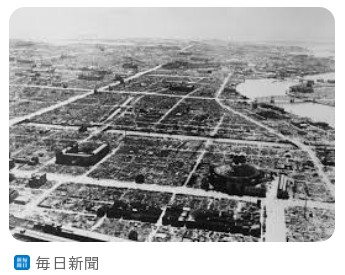
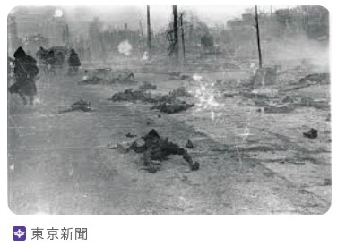
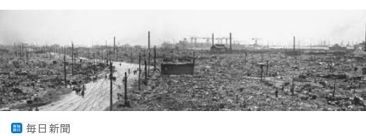

目黒の家を五月二十五日 B29による空襲で焼夷弾投下され避難するや、焼土とかしてしまいました。 空は真つ赤 本所、深川などの下町は焼野原、死人がごろごろ散乱しており、残って居るのは倉庫などで、ぽつんぽつん建っている始末 何と恐ろしい、哀れなことでしよう。
主人は満州に出征しておりましたので、子供二人を連れて、千葉の岩井に疎開しました。 夜ともなれば空見上げて、戦地の夫に思いを馳せた日日でした。
毎日雑炊を啜り、勤労奉仕に狩り出され、小さい体に大きな薪を背負わされ、細い畔道を順番に歩くので、後がつかえるため、一生懸命頑張るより仕方がないんです。
そして八月十五日終戦記念日「天皇」 (玉音放送)で日本敗戦を知らされた時は、勝利を夢見て、頑張りを続けてきた私として、なんと悲しい信じられぬ思いでーぱいでした。
やがて主人も帰国して来ましたが、主人は東京で働き,私達は疎開をつづけておりました。 ところが私の不注意で長男が疫痢(えきり)にかかり、消毒液が無い為、次男私まで感染して、親子三人隔離され入院させらました。 長男はもともと体が弱く、薬が全くないのでとうとう死んでしまいました。
次男と私は命をとりとめ現在暮らしております。 次男も一時は駄目かと思いました。 あの時の辛さは到底忘れようとしても忘れられません。
現在は物が有りすぎて、捨てる事を何とも思わず勿体ないと思うばかりです。 原爆や空襲の惨禍に命を失なった方々を思うとき胸を締めつけられる思いです。


